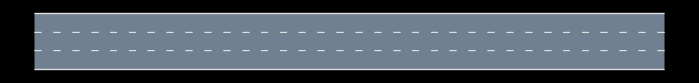
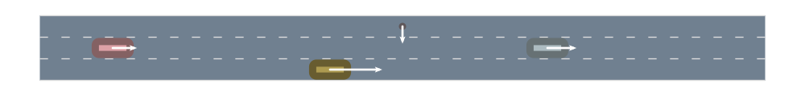
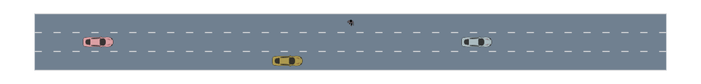
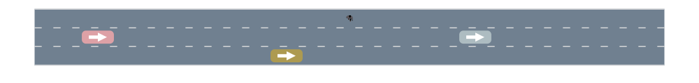
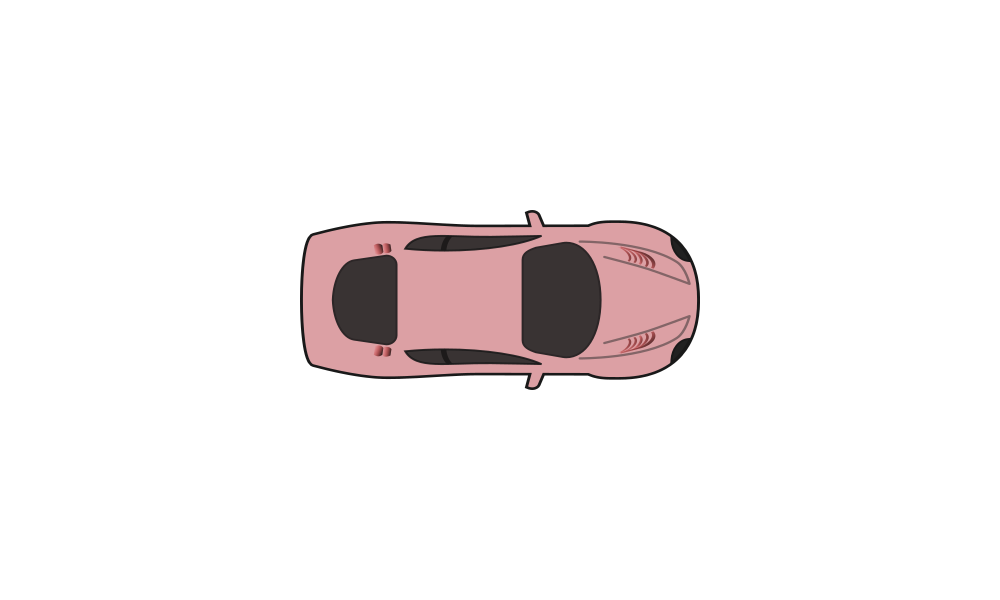
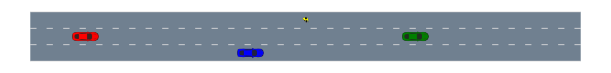
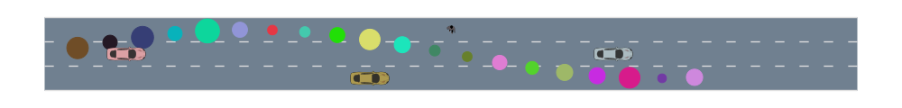
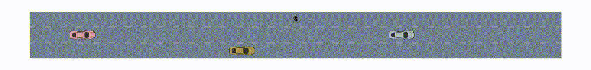

AutoViz Basics

To run these tutorials, you must be using julia 1.1+ and have AutoViz.jl installed.
The core function of the AutoViz.jl package is AutoViz.render()
AutoViz.render — Functionrender(
renderables::AbstractVector;
camera::Union{Nothing, Camera} = nothing,
canvas_width::Int64 = (camera === nothing ? DEFAULT_CANVAS_WIDTH : canvas_width(camera)),
canvas_height::Int64 = (camera === nothing ? DEFAULT_CANVAS_HEIGHT : canvas_height(camera)),
surface::CairoSurface = CairoSVGSurface(IOBuffer(), canvas_width, canvas_height)
)Draw all renderables to a surface of dimensions canvas_width x canvas_height. All renderables must implement the add_renderable! function which adds rendering instructions to the render model.
The provided camera should be updated using the update_camera!() function before calling render. If no camera is provided, the render function will default to fitting all renderable objects to the canvas.
In its simplest form, the render function only takes one argument: an iterable collection of renderable objects, renderables. In order for an object to be renderable, it needs to implement the add_renderable!() function.
By default, the render() function will do its best to make all the contents of the scene fit to the canvas of dimensions canvas_width x canvas_height. More fine-grained control over camera positioning can be achieved by providing the camera keyword. In case a custom camera is used, it is important to call update_camera!(camera, scene) before rendering.
The Cairo surface to be used for plotting can be specified using the surface keyword. The render() function applies the rendering instructions to the surface and returns it. In the tutorials, we will denote the returned surface as a snapshot of the scene. Such snapshots can be saved to file using the command
write("snapshot.svg", snapshot)Basic rendering
We start our example by rendering an empty roadway
using AutomotiveDrivingModels
using AutoViz
roadway = gen_straight_roadway(3, 100.0)
snapshot = render([roadway], canvas_height=120)
We can change the background color and render again
AutoViz.colortheme["background"] = colorant"white"
snapshot = render([roadway], canvas_height=120)
Let's add some vehicles to the roadway
car_len = 4.8
car_width = 1.8
def = VehicleDef(AgentClass.CAR, car_len, car_width)
w = DEFAULT_LANE_WIDTH
scene = Scene(Entity{VehicleState,VehicleDef,Int64}, 4) # allocate a scene for 4 agentsScene{AutomotiveDrivingModels.Entity{AutomotiveDrivingModels.VehicleState,AutomotiveDrivingModels.VehicleDef,Int64}}(0 entities)add three cars
push!.(Ref(scene), [
Entity(VehicleState(VecSE2(10.0, w, 0.0), roadway, 4.0 + 2.0randn()), def, 1),
Entity(VehicleState(VecSE2(40.0, 0.0, 0.0), roadway, 4.0 + 2.0randn()), def, 2),
Entity(VehicleState(VecSE2(70.0, w, 0.0), roadway, 4.0 + 2.0randn()), def, 3),
])3-element Array{AutomotiveDrivingModels.Scene{AutomotiveDrivingModels.Entity{AutomotiveDrivingModels.VehicleState,AutomotiveDrivingModels.VehicleDef,Int64}},1}:
Scene{AutomotiveDrivingModels.Entity{AutomotiveDrivingModels.VehicleState,AutomotiveDrivingModels.VehicleDef,Int64}}(3 entities)
Scene{AutomotiveDrivingModels.Entity{AutomotiveDrivingModels.VehicleState,AutomotiveDrivingModels.VehicleDef,Int64}}(3 entities)
Scene{AutomotiveDrivingModels.Entity{AutomotiveDrivingModels.VehicleState,AutomotiveDrivingModels.VehicleDef,Int64}}(3 entities)add a pedestrian
push!(scene, Entity(
VehicleState(VecSE2(50.0, 2w, -π/2), roadway, 2.0),
VehicleDef(AgentClass.PEDESTRIAN, 1., 1.),
42
))
snapshot = render([roadway, scene], canvas_height=120)
Vehicle Shapes
The render function provides some defaults for rendering basic building blocks such as entities or roadways. If the value of AutoViz.rendermode is set to :basic, entities are simply rendered as rectangles with arrows indicating their velocities. This can also be done explicitly via
renderables = [
roadway,
(EntityRectangle(entity=x) for x in scene)...,
(VelocityArrow(entity=x) for x in scene)...,
]
snapshot = render(renderables, canvas_height=120)
The result remains the same. The velocity arrows point to the location at which the vehicle would be 1 second in the future.
Setting AutoViz.rendermode to :fancy, the rectangles are replaced by SVG images of cars (or pedestrians).
AutoViz.set_render_mode(:fancy)
snapshot = render([roadway, scene], canvas_height=120)
Which is shorthand for
renderables = [
roadway, (FancyCar(car=scene[i]) for i in 1:3)..., FancyPedestrian(ped=scene[4])
]
snapshot = render(renderables, canvas_height=120)A third visualization mode is available in the form of arrow cars, in which the arrow indicates the heading direction of the car but does not scale with speed.
renderables = [
roadway,
(ArrowCar(scene[i]) for i in 1:3)...,
FancyPedestrian(ped=scene[4])
]
snapshot = render(renderables, canvas_height=120)
It is also possible to render single vehicles
fancy_car = FancyCar(car=Entity(VehicleState(VecSE2(0.,0.), 0.), VehicleDef(), 1))
snapshot = render([fancy_car], camera=StaticCamera(zoom=100.))
Vehicle Colors
By default, the render function generates a random color for each entity based on its ID using the id_to_color() function. However, vehicle colors can also be assigned explicitly:
colors = [colorant"red", colorant"blue", colorant"green"]
renderables = [
roadway,
(FancyCar(car=scene[i], color=colors[i]) for i in 1:3)...,
FancyPedestrian(ped=scene[4], color=colorant"yellow")
]
snapshot = render(renderables, canvas_height=120)
Custom Renderable Objects
using Colors
struct MyRenderableCircle
pos::VecE2
radius::Float64
color::Colorant
end
function AutoViz.add_renderable!(rendermodel::RenderModel, circle::MyRenderableCircle)
# add the desired render instructions to the rendermodel
add_instruction!(
rendermodel, AutoViz.render_circle,
(circle.pos.x, circle.pos.y, circle.radius, circle.color),
coordinate_system=:scene
)
return rendermodel
end
circles = [MyRenderableCircle(VecE2(4i,3.0*(1+sin(i/4))), .5+rand(), rand(RGB)) for i in 1:20]
snapshot = render([roadway, circles..., scene], canvas_height=120)
Simulation and Animations
We can simulate the scenario over time and visualize the results using Reel (based on ffmpeg).
using Reel
timestep = 0.1
nticks = 50
models = Dict((i => Tim2DDriver() for i in 1:3)) # car models
models[42] = Tim2DDriver() # TODO: better pedestrian model
scenes = simulate(scene, roadway, models, nticks, timestep)
animation = roll(fps=1.0/timestep, duration=nticks*timestep) do t, dt
i = Int(floor(t/dt)) + 1
render([roadway, scenes[i]], canvas_height=120)
end"roadway_animated.gif"
Alternatively, the scene can also be visualized interactively using Interact
Another common visualization package is Reactive.
This page was generated using Literate.jl.